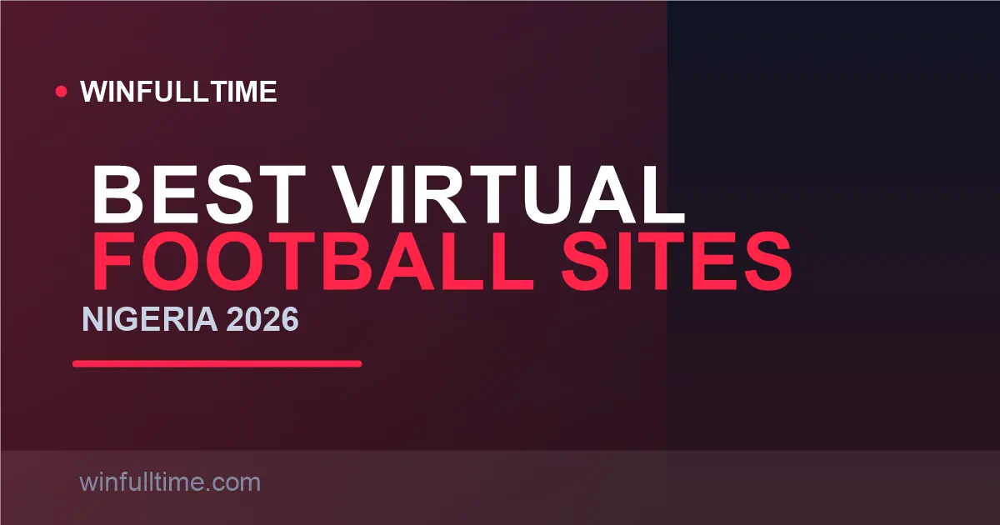

Best Virtual Football Betting Sites in Nigeria 2026: Played in Minutes

A virtual football match in Nigeria takes three to five minutes, never gets postponed and runs 24/7 — even at 3am on a Tuesday with no real fixtures anywhere. BetKing built the best version of it with Kings League, Bet9ja pioneered the Zoom brand, and SportyBet even runs a Nigeria-themed virtual league. These are the sites we rate highest for virtual football in 2026.

How Virtual Football Actually Works
Virtual football is simulated football: real league and team names, full 90 minutes compressed into three to five minutes, and an outcome decided by a certified Random Number Generator (RNG). There is no manager, no injury, no form, no weather — and crucially, no information edge. Every match is an independent random event, and no amount of study can predict it better than the next person.
That is the single most important truth of this market: virtual football is a casino-style game wearing a football jersey. RNG games carry a house edge, so over time the bookmaker's margin wins. Play it for entertainment and the instant result rush, not as a strategy you expect to beat consistently.
Figures verified August 2026 from operator help centres and regional review data; virtual products and stakes change without notice.
1. BetKing Market-Leading Kings League
BetKing built the virtual product most Nigerians think of first. Its Kings League is an EPL-style simulated football league with a new matchday every three minutes, realistic graphics and a clean stats display showing each team's recent virtual form. For speed there is the Kings InstaLeague, which skips the simulation and gives you the result almost instantly.
The standout feature is the 40% virtual accumulator bonus — the same boost that applies to real sports accas is applied automatically to virtual bets. Minimum stake is ₦50 on Kings League singles and multiples, with combination wagers starting at ₦20 per selection (so a 15-selection system needs 15 x 20 = ₦300). BetKing is LSLGA-licensed with heavy retail and online presence across Nigeria.
Pros
- Best-looking, most realistic virtual product
- 40% bonus on virtual accumulators
- Instant-result option for speed
- Wide retail + online access
Cons
- Fewer league formats than Bet9ja
- RNG game — no form to exploit
Verdict: The default for most Nigerian virtual bettors — the best blend of graphics, speed, bonus value and 24/7 availability.
2. Bet9ja Widest Zoom Variety
Bet9ja pioneered the Zoom brand in Nigeria and still runs the widest family of virtual leagues: Premier-Zoom (EPL-style), Liga-Zoom (La Liga), Bundes-Zoom, SerieA-Zoom, Ligue1-Zoom, Primeira-Zoom and Eredivisie-Zoom, plus tournament formats and a World Champions Cup. Minimum stake is ₦50, and virtual bets can be combined with real events in the same accumulator.
Bet9ja also offers the Simulated Reality League (SRL) — a different, data-driven product that models the real EPL and La Liga using players' historical stats, with each game lasting about a minute plus a two-minute betting window. Note the caps: the maximum winning per bet on Zoom is NGN 10,000,000, and the SRL maximum per bet slip is N10,000. The booking-code system works for virtual bets too, so you can share a virtual acca code via WhatsApp.
Pros
- Widest range of virtual leagues
- SRL offers a more data-driven alternative
- Booking-code sharing for virtual accas
- Trusted, Nigeria's biggest brand
Cons
- Standard promo code not valid on virtual games
- Winning caps apply (₦10M Zoom, ₦10k SRL)
Verdict: Choose Bet9ja for maximum virtual variety and the option to share your virtual acca codes with friends.
3. SportyBet The NG League
SportyBet's virtual football is defined by local flavour. Its NG League is a Nigeria-themed virtual competition using simulated Nigerian club names — a genuinely unique product that most Nigerian bettors love. Alongside it run England and Germany leagues (EPL and Bundesliga styles).
The available markets are standard and well covered: 1X2, Correct Score, Over/Under, Goal Goal/No Goal, Double Chance, HT/FT and Total Goals, with results settling within the standard three to four-minute cycle. The minimum stake is ₦50, and SportyBet's clean, fast mobile app makes the virtual experience feel effortless.
Pros
- Unique Nigeria-themed virtual league
- Well-covered standard markets
- Excellent, fast mobile app
Cons
- Fewer leagues than Bet9ja or BetKing
- No retail shops — online only
Verdict: The most fun virtual experience for Nigerian fans who want to bet on NG-branded virtual clubs.
4. 1xBet Widest Catalogue + Cash Out
1xBet offers the largest virtual sports catalogue available in Nigeria, with multiple virtual football providers and formats running around the clock. Its standout edge is virtual cash out — 1xBet is one of the only platforms where you can cash out a virtual bet before the simulation finishes, a genuine risk-management feature missing from most rivals' virtual sections.
The trade-off is the interface. 1xBet's power-user layout is cluttered and can be overwhelming compared with BetKing or SportyBet, but the depth is unmatched: virtual football across several providers, plus 20+ other virtual sports. Combine that with instant local payments and a ₦30 minimum stake and you have a deep, flexible virtual home — for players who can handle the interface.
Pros
- Only platform with reliable virtual cash out
- Huge virtual catalogue
- Low ₦30 minimum stake
- Instant local payments
Cons
- Cluttered, power-user interface
- Bonus wagering terms are strict
Verdict: Pick 1xBet for the widest virtual range and the rare ability to cash out before a sim finishes.
5. Melbet Maximum Virtual Variety
Melbet rounds out the list with the single largest virtual catalogue in the Nigerian market — 20+ virtual products including virtual football, basketball, tennis, greyhound racing and the Simulated Reality League (SRL). Melbet's SRL uses real players' historical stats to model outcomes, sitting somewhere between pure virtual and real betting.
It is a solid all-round virtual destination with a clean-enough interface, strong bonus offers and fast local payments. The basketball and other sports variety makes it the best choice for bettors who want virtual action beyond football.
Pros
- Largest virtual catalogue of any Nigerian site
- Data-driven SRL options
- Virtual sports beyond football
Cons
- Can be visually busy
- Virtual football not as polished as BetKing
Verdict: For bettors who want the full virtual buffet — football, basketball, racing and SRL — in one account.
Virtual Football Comparison Table
| Operator | Best For | Min Stake | Virtual Acca Bonus | Unique Feature |
|---|---|---|---|---|
| BetKing | Overall favourite | ₦50 | 40% | Kings InstaLeague instant results |
| Bet9ja | League variety | ₦50 | Multi-boost | 7+ Zoom leagues + SRL |
| SportyBet | Nigerian flavour | ₦50 | Standard acca | NG League virtual clubs |
| 1xBet | Catalogue + cash out | ₦30 | Standard acca | Virtual cash out |
| Melbet | Maximum variety | ₦50 | Standard acca | 20+ virtual products + SRL |
Minimums and features verified August 2026; virtual products and stake floors change without notice, so confirm current values on each operator's virtual section.
Tip: check the winning caps
Virtual games carry payout ceilings that real football does not. Bet9ja caps Zoom winnings at NGN 10,000,000 per day and its SRL at N10,000 per slip. Before stacking multiple high-odds virtual legs in one acca, check the operator's virtual T&Cs so a huge potential win is not silently capped.
The RNG Reality: What You Can and Cannot Control
Because virtual football is RNG-driven, ordinary sports-betting logic breaks down. Form, injuries, motivation and squad news mean nothing — they are simulated, not real. This is both the appeal (no postponements, instant results) and the trap (no real edge to find).
What you can control is your own discipline: budget, stake size, bonus selection and the choice of operator. Stick to sites with licensed, certified RNGs, treat virtual betting as entertainment with a house edge, and never chase losses with the logic that "a win is due" — in an RNG game, no result is ever due.
Virtual Football Betting Tips for Nigerian Bettors
Tip 1: Take the 40% bonus, not the big stakes
BetKing's 40% virtual accumulator bonus adds genuine value — a ₦100 virtual acca with 40% boost effectively returns ₦140-event value. Bet modest stakes and let the bonus do the work rather than chasing large virtual multi-leg payouts.
Tip 2: Combine virtual accas but mind the cap
Virtual bets can be combined with real events in one accumulator, which lets small virtual legs diversify a real-football acca. Just keep the total payout inside the operator's virtual winning cap so you are not surprised by a limit on a big combined slip.
Tip 3: No strategy beats the RNG — budget instead
Do not fall for "virtual form" systems or prediction scams. RNG outcomes are independent, so the only edge is responsible bankroll management. Set a small virtual budget, stake consistently, and never escalate after a loss.
Tip 4: Use cash out where it exists
On 1xBet, the virtual cash-out feature lets you lock in a profit on a virtual bet before the simulation ends. That is the rare legitimate tool in virtual betting — use it to protect winning positions instead of letting every sim play out.
Frequently Asked Questions
What is the best virtual football betting site in Nigeria?
BetKing's Kings League is generally considered Nigeria's best virtual football product, thanks to realistic EPL-style graphics, three-minute match cycles around the clock, and a 40% accumulator bonus that applies to virtual bets. Bet9ja's Zoom leagues offer the widest variety of formats, and Melbet carries the most virtual products in one place.
What is Zoom Soccer in Nigeria?
Zoom Soccer is the widely used generic name for virtual football betting in Nigeria — simulated football matches that complete in three to five minutes and run 24/7, with results decided by a Random Number Generator rather than real teams. Bet9ja's Zoom and BetKing's Kings League helped popularise the format.
What is the minimum stake on virtual football in Nigeria?
BetKing, Bet9ja and SportyBet all accept virtual football singles from a ₦50 minimum stake, with ₦20 per selection on BetKing combination wagers. Most other platforms set the virtual floor at around ₦100, so ₦50 is the cheapest standard entry in the market.
Are virtual football results rigged in Nigeria?
No. Licensed operators use an independently certified Random Number Generator (RNG) to decide every virtual football outcome, so results are genuinely random and not rigged. What that means for you is realistic: there is no pattern or form to exploit — each match is an independent random event.
Can I use a virtual betting promo code in Nigeria?
Bet9ja states its standard promo code is not available on virtual games, but the operator applies its multi-boost to virtual accumulator bets automatically. BetKing's 40% virtual accumulator bonus is applied automatically too, so you do not need a promotional code for most virtual betting offers.
Bet on the Games That Never Rest
Backed up your data-driven football edge with head-to-head analysis and value picks for the biggest real leagues — then let virtual cover the gaps.
Last updated: 30 August 2026 | By Tochukwu Mesigo |
Build Winning Accumulator Tickets
Generate optimized accumulator combinations from today's data-driven predictions. Set your target odds and get instant ticket suggestions.
Free Ticket Builder →